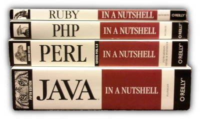

This may not be very scientific, but perhaps this is why Ruby is such a wonderful language.  For those of you wondering about Python, the bookstore didn't have it on the shelf. Based on page counts it would fall between Perl and PHP.